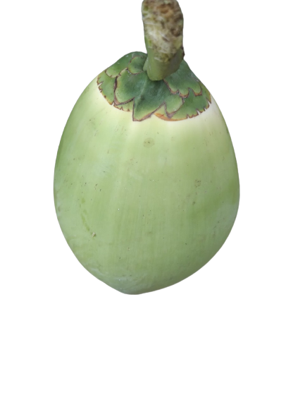

Đây chính là
Phân loại chất lượng dừa (non, nạo, khô) là quá trình xác định và tách biệt các loại dừa dựa trên độ tuổi và mức độ chín của quả dừa. Điều này có thể thực hiện bằng cách sử dụng mắt thường hoặc các phương pháp công nghệ hơn để giúp trong việc phân loại dừa.
Xem sản phẩm
